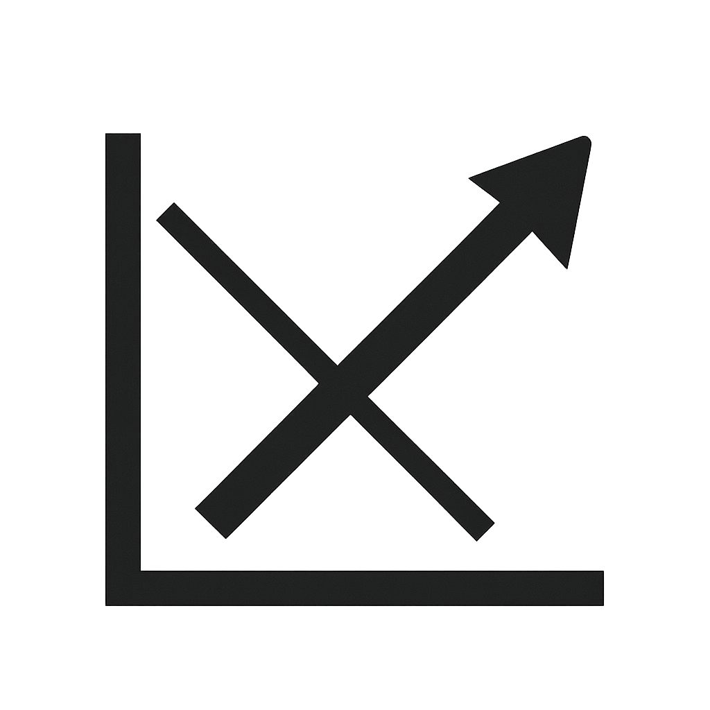

WMS-Lernplattform
☰
Navigation
üìê Mathematik
Rechnungen in Z
Rechnungen in Q
Lineare Gleichungen & Systeme
Quadratische Gleichungen
Potenzen & Logarithmen
Nutzenschwelle
Lineare Optimierung
Mathematik
Finanz- und Rechnungswesen
Wirtschaft und Recht
Rechnungen in Z
Rechnungen in Q

Lineare Gleichungen & Systeme
Quadratische Gleichungen
Potenzen & Logarithmen
Nutzenschwelle
Lineare Optimierung